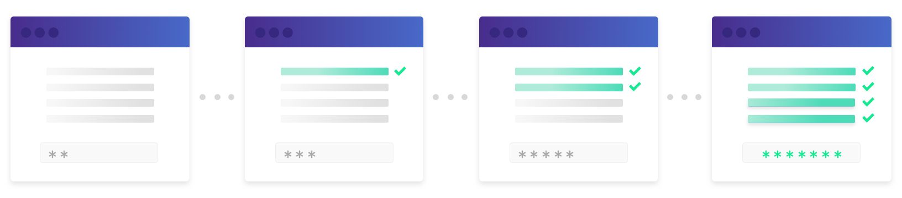

Reset your password: new userflow
Implemented a new user journey to reset the password with a stronger criteria, due to complaints and technical issues in the original solution.
Why we did this project
- Increase of security
- Lack of UX consistency
The security team released new security rules for our users and therefore we had to develop a new solution to be compliant with the new security rules.
We know that changing our password is something necessary but not actually fun to do. Specially when we need to comply with a lot of different rules to make sure our password is safe. And this is why it's important to deliver a design that can motivate people to complete the task.
Besides the security compliance, we enjoyed the opportunity to optimize the userflow because, at that moment, we offered two different flows for users to edit their password. This was not consistent for the users (poor user experience) and neither for our developers, since they had more code to maintain for the same task.

Ideation
The first thing to do was to create a single user flow for the creation of a password. Thus, I merged the previous two different forms into a single one, to be a "source of truth" for users, in order to improve the UI and UX consistency. Plus, this is also an imporvement for the tech team, because it makes it easier to maintain the code and to solve possible bugs in this part of the platform.
For users trying to reset their password via the "forgot password" link in the login page and for users trying to change their password from their user account settings, they have a direct link leading them to the same form from now on.
Prototyping
Error prevention, error recovery, and feedback are at the center of user experience design. However most password interfaces only validate their security policy after the user submits the form, not while they enter the password itself. So after getting the new rules defined by our security team, I started drafting an optimal userflow that could be interactive and fun for the user. The main goal was to generate positive feedback as they achieve each one of the security criterium correctly.


Outcome
When you celebrate little wins with the user, the level of frustration is lower due to the increase of dopamine and the bigger are the chances that they will finish the task until the end. Thus, the final solution generates encouraging and fun sentences throughout the process, so the user is encouraged to finish it while they're being correctly informed of their progress of completion.
Team
Tech lead: Manhulay Siriphol
Front-end developer: Jihan El-medini
Product designer: Bettina D'ávila
Security Compliance Manager: Tony Belot
Dashboard for CXO campaigns management
B2B Web Platform
AB Tasty is an all-inclusive B2B/SaaS tool for website and customer experience optimization.
Mobile app for CXO campaigns management
B2C Mobile App
B2B mobile application for end users to follow and monitor their campaigns on-the-go.
Helping users to create a new password
B2B Web Platform
Changing our password is often necessary and, sometimes, mandatory. But never a fun task.